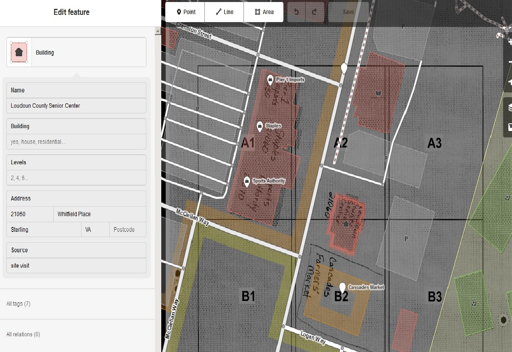

For Northern Virginia Community College GIS Day, we decided to plan a mapathon incorporating National Geographic’s “The Future of Food” theme. We planned to map Farmers Markets in Virginia using OpenStreetMap. While we were able to find long/lat information for Farmers Markets in Virginia which students could add to OSM, we also wanted to show students that they could go out to their local Farmers Markets and gather information to be uploaded to OSM using field papers.
The first step was to print a map from the field papers website which would include the location of a local Farmers Market. Once the map was printed, a NOVA instructor was able to write information directly onto the printed map including street address and names of buildings in the same area as the Farmers Market.

After the information was gathered, the paper map was converted to a jpeg file and then uploaded using the field papers website. Once the map was uploaded, information was easily added to OSM.
Because our participants were not actually going to use field papers for this event, the workflow only involved an instructor and a family member assistant! If field papers had been part of the event, a map atlas would have been printed and distributed to participants ahead of time.
Creating an atlas using field papers took some time to master, but the process was relatively simple. Make sure that you follow the instructions for the correct type of file that can be uploaded using field papers or your map will not upload.
With three simple pictures, we were able to show students how easy it is to work in the field and add the most accurate information to OSM.
Please contact Janice Ouellette jouellette@nvcc.edu with any questions.